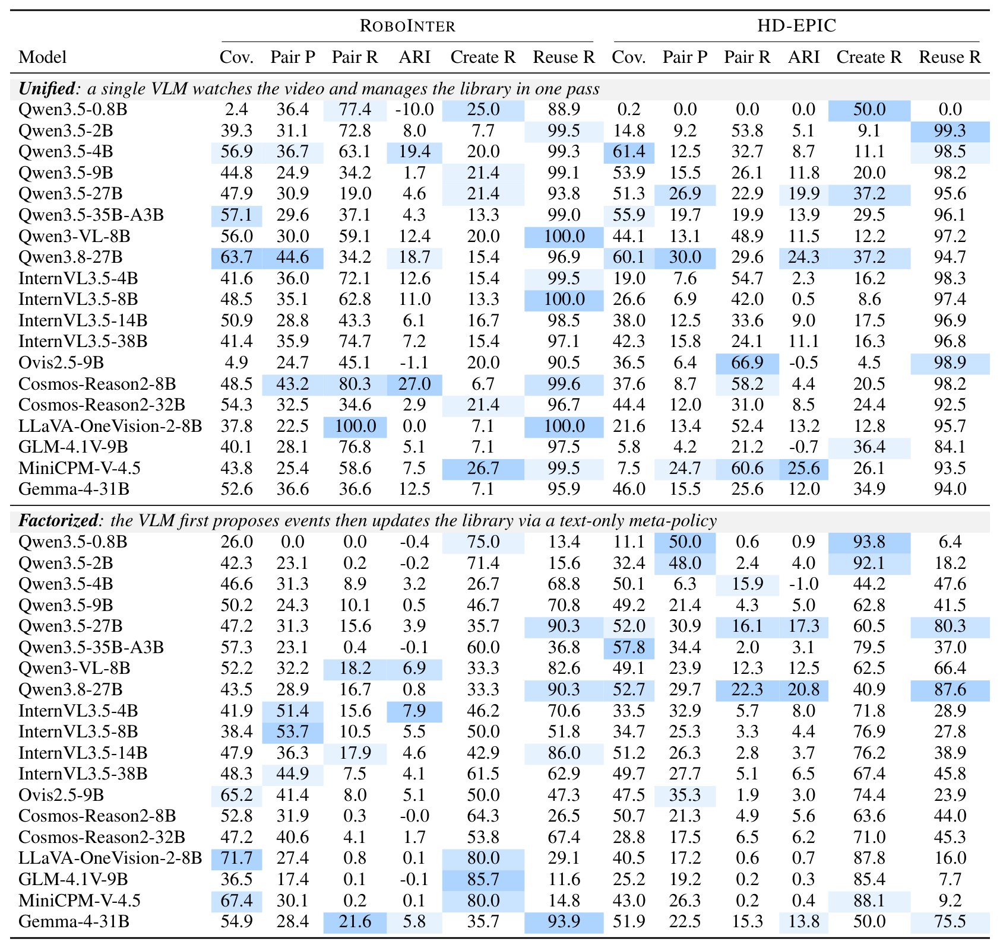
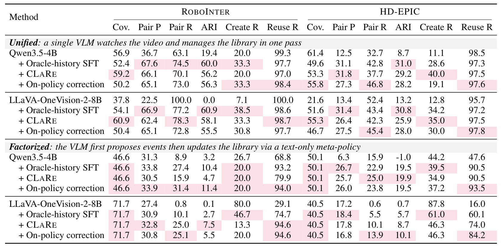
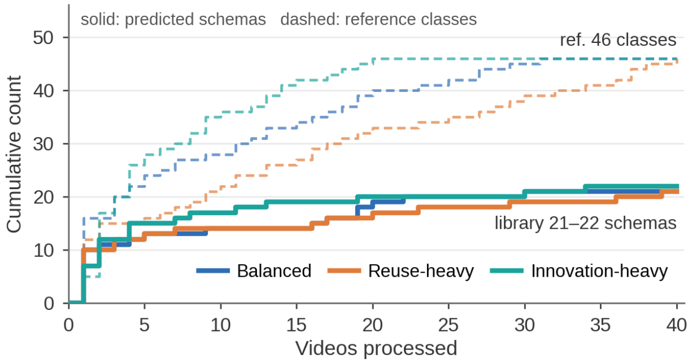
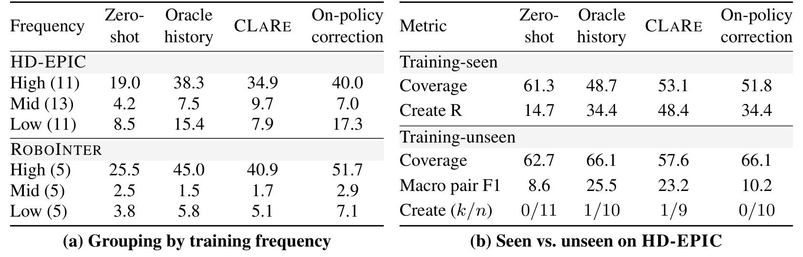

From Streaming Experience to Reusable Embodied Skills
Manipulation behaviors vary widely across objects and scenes, yet they share a small set of reusable skills. Vision-Language Models describe individual manipulation events well, but can they organize a stream of events into reusable skills? We study this question through:
Streaming Embodied Skill Discovery (SESD): A model watches videos in sequence, grounds each manipulation event in time, and maintains a persistent skill library, deciding whether to reuse an existing skill or create a new one.
Video2Skill: A benchmark spanning robot tabletop manipulation (RoboInter) and egocentric kitchen activity (HD-EPIC) that jointly measures event coverage, naming-invariant skill grouping, and creation–reuse decisions.
Evaluation and Supervision: 19 open-source VLMs and three fine-tuning strategies, including our counterfactual library-state rebalancing (CLaRe), reveal that recognizing when existing skills are insufficient is the central challenge.
Figure 1: From describing events to accumulating reusable skills.
(A) Vision-Language Models recognize manipulation events in open-vocabulary language.
(B) Video2Skill further organizes these observations into a persistent library of symbolic skills, grounding each event in time and deciding whether to
reuse an existing skill or
introduce a new one.
Video 1 introduces grasp, transfer, and place; Video 2 reuses all three despite changes in objects and scene; Video 3 reuses grasp and transfer while adding throw for a new transformation.
The library thus preserves shared structure across observations while expanding to accommodate novelty.
Manipulation behaviors vary widely across objects and scenes, but they share a small set of reusable skills, and planning with these skills helps embodied agents generalize to new tasks. Yet an agent can only plan with skills it knows. Recovering skills from observed experience, the inverse of planning, builds this knowledge over time and yields skill data for training future agents. Vision-Language Models (VLMs) describe individual manipulation events well, but can they organize a stream of events into reusable skills? We formulate this problem as Streaming Embodied Skill Discovery (SESD): a model watches videos in sequence and maintains a persistent skill library that shapes its later decisions. To systematically measure this ability, we introduce Video2Skill, a benchmark that covers robot tabletop manipulation and human kitchen activity and tests three core capabilities: (i) locating manipulation events in time, (ii) grouping events of the same transformation, and (iii) deciding when to reuse an existing skill or create a new one. Across 19 open-source VLMs, many models group events at near-chance level, and scale does not consistently help. Their errors depend on how perception and library updates are coupled: joint models merge distinct transformations into one skill, while models that update the library from text descriptions duplicate recurring ones. Supervised fine-tuning, including our counterfactual library-state rebalancing (CLaRe), improves grouping but exposes a deeper bottleneck: trained models consolidate familiar skills yet rarely expand the library. Their libraries stall below half the reference size, and transformations unseen in training are located in time but almost never given a new skill. Recognizing when existing skills are insufficient thus emerges as the central challenge.
A model processes an ordered stream of videos in chunks. At each step it receives a new chunk together with its current state: a persistent skill library and an optional unfinished event carried over from the previous chunk. It outputs any new schemas, the completed events in the chunk, and an updated unfinished event:
Each event specifies its temporal boundaries, a schema, and argument bindings, e.g. grasp(object, source). A schema has a free-form name, a definition, and typed argument slots; it describes a physical transformation rather than an executable controller. The library starts empty and persists across videos, so every earlier creation and reuse decision shapes how later observations are interpreted.
Creating duplicate schemas fragments recurring experience, while reusing an overly broad schema merges distinct transformations.
Benchmark Curation and Evaluation
Source data. Video2Skill spans human and robot manipulation: HD-EPIC provides long egocentric recordings of unscripted kitchen activity, and RoboInter provides robot tabletop videos drawn from DROID and RH20T. Median reference segments in the verified test splits last 1.9 s and 4.5 s, respectively.
Curation. Annotation prioritizes visual evidence over source labels. Each candidate segment is checked against the video; labels whose stated manipulation is not visually supported are discarded. Retained events are typed skill calls with arguments drawn from seven roles (object, source, destination, instrument, direction, substance, state). Review corrected 241 of 12,429 verified calls, which are organized into 48 canonical transformation classes that define the reference partition. Models never see this class list and name their schemas freely.
Splits. HD-EPIC: 42 training videos (5,726 calls) and 40 test clips from 29 held-out recordings (1,137 segments, 46 classes). RoboInter: 2,992 training videos (5,032 calls) and 132 test videos (534 segments, 15 classes). Training and test splits are disjoint at the source-video level.
Evaluation covers three complementary dimensions:
Temporal coverage. Each reference event is matched to its highest-tIoU prediction (IoU ≥ 0.3); coverage is the fraction of reference events recovered.
Naming-invariant skill grouping. Over matched events, including cross-video pairs, pair precision (low → overmerging), pair recall (low → fragmentation), and the Adjusted Rand Index (ARI) compare the predicted partition with the reference classes, independently of schema names.
Creation–reuse decisions. Walking through matched events in order, Create recall measures whether first occurrences of a reference class receive a new name, and Reuse recall measures whether recurrences receive a previously used one.
How Do Current Models Behave?
We evaluate 19 open-source VLMs without task-specific training under two paradigms. Unified models jointly ground events and update the library from visual input; factorized models first propose events without library access, then use the same model for text-only library updates.

Table 1: Raw model performance on SESD.
Unified models jointly identify events and update the skill library; factorized models first propose events without library access, then use the same model for text-only library updates.
Results use verified test splits in balanced order. Create R and Reuse R denote recall. All scores are multiplied by 100; ARI can be negative.
Unified models overmerge; factorized models fragment.
Unified models tend to reuse existing schemas even when a new transformation appears (high reuse recall, low creation recall, low pair precision). Factorized models create schemas more readily but repeatedly split recurring transformations across duplicate names. On HD-EPIC, switching Qwen3.5-2B from unified to factorized raises pair precision from 9.2 to 48.0 but drops pair recall from 53.8 to 2.4.
Scaling does not consistently improve skill abstraction.
Scaling unified Qwen3.5 from 4B to 27B improves ARI on HD-EPIC (8.7 → 19.9) but lowers it on RoboInter (19.4 → 4.6); InternVL3.5 shows no monotonic trend either. ARI stays at or below 27.0 across all configurations.
Coverage and grouping must be read together.
Factorized LLaVA-OneVision-2-8B reaches the highest RoboInter coverage (71.7%) with an ARI of only 0.1, while unified MiniCPM-V-4.5 attains the best HD-EPIC ARI (25.6) on just 7.5% of reference events.
Learning to Maintain a Skill Library
We fine-tune Qwen3.5-4B and LLaVA-OneVision-2-8B under both paradigms with three supervised strategies that differ in which library states the model sees during training:
Oracle-history SFT replays annotated episodes in order, so each observation is paired with the library produced by the preceding reference outputs.
Counterfactual Library-state Rebalancing (CLaRe) edits the library while holding the observation fixed. Removing a required schema turns reuse into creation, while adding lexical distractors or removing unrelated entries should leave the assignment unchanged. This supervises both sensitivity to relevant changes and consistency under irrelevant ones.
On-policy correction rolls out the student over training episodes and relabels the states it actually reaches, providing supervision under its own accumulated errors.

Table 2: Effect of supervision on Video2Skill across two backbones.
Pink highlights column maxima among the three supervised variants within each backbone and paradigm, including ties.
All scores are multiplied by 100; ARI can be negative.
Supervision mitigates both failure tendencies.
All three strategies improve ARI over zero-shot across both backbones, domains, and paradigms. Oracle-history SFT raises unified Qwen3.5-4B's pair precision from 30.0 to 67.6 on RoboInter; on-policy correction raises factorized LLaVA's reuse recall on RoboInter from 29.1 to 94.6.
Training-state interventions help in different settings.
Oracle-history SFT achieves the highest unified ARI in all four backbone–domain settings. CLaRe raises coverage and creation recall for unified Qwen3.5-4B on HD-EPIC, and on-policy correction attains the highest factorized reuse recall in every setting, without uniformly improving ARI.
Better grouping does not ensure correct creation and reuse.
Trained unified models keep reuse recall at 97.0–98.7 while creation recall reaches only 19.1–40.0: most first occurrences of a transformation still receive a previously used name.
Further Analysis
Does Video Order Change What Is Discovered?

Figure 2: Library growth under different video orders.
Unified Qwen3.5-4B with oracle-history SFT on the 40 HD-EPIC clips. Solid and dashed curves show cumulative predicted schemas and observed reference classes, respectively. All three orders end with 21–22 schemas versus 46 reference classes.
The library stalls below half the reference size.
Under the innovation-heavy order, all 46 reference classes have appeared by the twentieth video, yet the model has introduced only 20 schemas. Making novelty appear earlier does not substantially enlarge the final repertoire.
Training makes schema names more order-consistent.
Oracle-history SFT and CLaRe both reach a mean pairwise Jaccard similarity of 0.78 between final schema-name sets across orders, compared with 0.59 for the zero-shot model.
Which Skills Benefit, and Is Novelty Recognized?

Table 3: Skill grouping and novelty recognition with unified Qwen3.5-4B.
(a) Macro pair F1 by training frequency (class counts in parentheses).
(b) Classes seen or unseen in task-specific training. For unseen classes, \(k/n\) counts those receiving a new schema name at their first matched occurrence, out of all covered classes. Other scores are multiplied by 100.
Gains concentrate on frequently demonstrated skills.
High-frequency classes rise from 19.0 to 34.9–40.0 pair F1 on HD-EPIC and from 25.5 to 40.9–51.7 on RoboInter, while medium-frequency classes stay below 10 on both datasets.
Unseen transformations are located but rarely named as new.
Eleven HD-EPIC test classes are absent from training. After supervision their temporal coverage (57.6–66.1) exceeds that of seen classes, yet trained models create a new schema at the first matched occurrence of at most one of the nine to ten covered unseen classes.
Conclusion
We introduced Video2Skill to study whether models can turn streaming visual experience into a persistent library of reusable skills. Across robot manipulation and egocentric kitchen activity, evaluations of 19 VLMs reveal complementary weaknesses: unified models tend to merge distinct transformations, while factorized models frequently assign recurring transformations to duplicate schemas. Oracle-history SFT, counterfactual library-state rebalancing, and on-policy correction partially alleviate these failures, but do not reliably resolve the boundary between novelty and reuse. Our findings underscore the need to evaluate event coverage and abstraction quality jointly, and establish a testbed for learning coherent skill libraries that remain useful as experience accumulates.
Acknowledgement
We thank the Cambrian authors for providing this webpage template.
BibTeX
@article{zhang2026video2skill,
title={Video2Skill: From Streaming Experience to Reusable Embodied Skills},
author={Zhang, Jianshu and Zhang, Ce and Yang, Xiyuan and Xu, Chenwei and Lu, Haoran and Li, Yijiang and Xie, Yaqi and Sycara, Katia P. and Liu, Han},
journal={arXiv preprint},
year={2026}
}